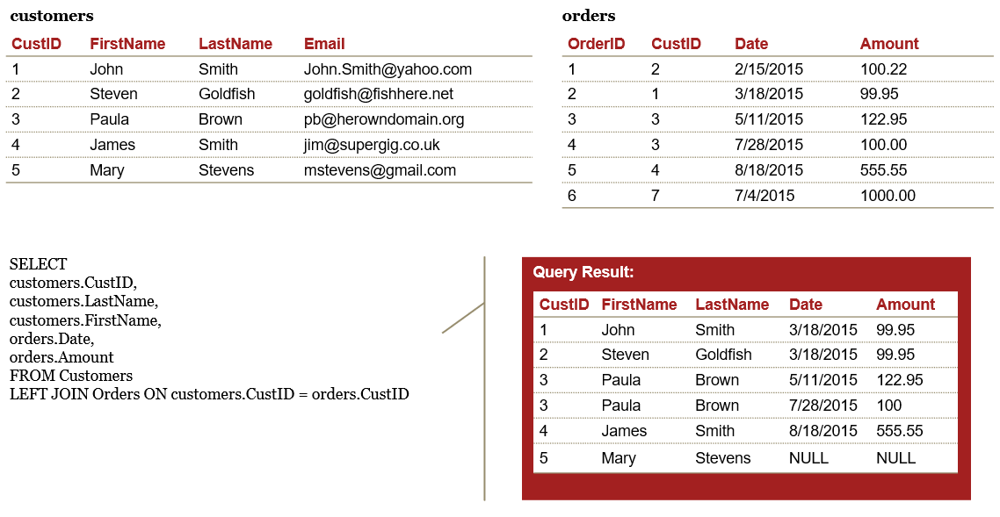

Game Plan
At this point everyone should have the class technology up and running on their machines. We are going to learn the basics ETL using mostly RStudio, but we will start off with concepts learned in ACC3003, relational databases and excel. You should have experience with relational databases and excel, but if you have forgotten do not worry. We will pick up here and discover how R can push these technologies further. Lets get started with Relational databases.
This case study is provided by PWC. It was developed for a masters level course, but I am adapting it for our class. I will provide all of the knowledge based content because it is important to get an understanding of what accounting firms are looking for, but we may only discuss portions in class.
Lets Get Started
Module 1 Objectives
Demonstrate knowledge of relational databases, data lineage, and ERP systems
Demonstrate how to interpret an entity relationship diagram
Demonstrate how to use SQL to transform and analyze data
Review
Data Analytics Process
What is a Relational Database
A relational database is a collection of data that organizes data in tables and maintains relationships between the tables for information retrieval
A relational database management system (RDBMS) is computer software that enables users to create, modify, and analyze data in a relational database
Enterprise RDBMS include:
Microsoft SQL Server
Oracle Database
Oracle MySQL
IBM DB2
SAP Sybase
Teradata
PostgreSQL
Lightweight RDBMS include:
Microsoft Access
SQLite (what we are using )
Key Terms
A table is the basic unit of data storage in a database. Data is stored in rows and columns. You can specify rules for each column of a table like establishing its data type, forcing a column to contain a value in every row, or ensuring unique records
A view is a tailored presentation of data selected from one or more tables, possibly including other views. A view contains no actual data but rather derives what it shows from the tables and views on which it is based. Therefore, a view can be thought of as a virtual table
A schema is a container within a database similar to a directory on a file system that groups tables together
The connection between tables is made by a Primary Key Foreign Key pair, where the Foreign Key in a table is the Primary Key of another table
A query is used to create, manipulate, or view database objects
A report is formatted view of data from the database within user-defined parameters, often generated in an external file format such as.txt
Tables
Tables consist of one or more records or rows of data
The data for each row is organized into a defined set of attributes, organized into columns
Data types include:
String/Text/Character
Numeric (Integer, Float)
Date/Time
Boolean (Yes/No, True/False)
Relational Tables
Primary Key
Primary key is a unique identifier of records in a table
Primary key values may be generated manually or automatically
A primary key can consist of more than one field
Relationship Types
One-to-One
Each instance of one entity relates to only one instance of the second
Not frequently used in database systems
Might use to divide a table with many fields in order to isolate part of a table
One-to-Many
Each instance of one entity relates to one or more instances of the second entity
Most common type of relationship and it is used to relate one record from the primary table with many records in the related table.
In a one-to-many relationship, a record (parent) in Table A can have many matching records (children) in Table B, but a record (child) in Table B has only one matching record (parent) in Table A.
Many-to-Many
- Multiple instances of one entity relate to multiple instances of the second entity
Entity Relationship Diagram

Other Information in PWC Case Study
Structured Query Language
What is SQL
Structured Query Language (SQL) is the programming language used when interacting with data in a relational database
SQL implementations for different databases may have minor differences in functions and syntax
SQL statements can be categorized into two groups: Data Definition Language (DDL) and Data Manipulation Language (DML)
DDL statements are used to create and/or alter table structures in a SQL Serverdatabase
DML statements are used to add, modify, query, or remove data from a SQL Serverdatabase
SQL Basics
A statement is a complete sequence of functions, keywords, operators, and values that can be evaluated by the database engine
A query returns records from one or more tables in the database
A clause is a component of a statement or query
An expressionis a combination of one or more values, operators, and functions that evaluates to a value
Extra white space (spaces, new lines, etc.) is not evaluated
SQL is typically case-insensitive, but functions are capitalized by convention
SQL statements are often required to end with a semi-colon (;)
SQLite and DB Browser for SQLite
www.sqlite.org:
SQLite is a self-contained, high-reliability, embedded, full-featured, public-domain, SQL database engine
SQLite is the most used database engine in the world
sqlitebrowser.org:
DB Browser for SQLite [DB4S] is a high quality, visual, open source tool to create, design, and edit database files compatible with SQLite
Create, define, modify and delete tables
Browse, edit, add and delete records
Search records
Import and export tables from/to CSV files
Issue SQL queries and inspect the results
SQLite/DB4S Basics

Comments
Adding comments is a best practice when writing code, in any programming language
These statements are not evaluated by the SQL engine but help the reader understand the intent and the approach behind an individual line of code or the script as a whole
In SQL, single-line comments are generally preceded by a double dash (), while block comments across multiple lines are marked by /* */

Chinook Sample Database
Chinook is a digital media store with several employees
Customers can buy individual tracks from a variety of musical artists
The database contains master and transactional data for the business
Download the database and open the Chinook_Sqlite.sqlite file in DB4S
SYNTAX
SELECT statement
A SELECT statement is used to fetch records from a database table in the form of a table called a result set
One or more columns may be specified, or the asterisk (*) can be used to return all records from the table
Use the LIMIT keyword to return only the first n rows from the result set
The result set is not stored in the database without the use of additional functions
\(\color{red}{\text{SELECT}}\) column1, column2, column3 \(\color{red}{\text{FROM}}\) table_name
\(\color{red}{\text{SELECT * FROM}}\) table_name
\(\color{red}{\text{SELECT}}\) column1, column2, column3 \(\color{red}{\text{FROM}}\) table_name \(\color{red}{\text{LIMIT}}\) 5
CREATE TABLE statement
A CREATE TABLE statement is used to add the result set from a query to the database as a new table
Complicated queries can be broken down by creating intermediate tables
The ability to create a table depends on the level of access granted to a user, so it may not be possible in some situations
\(\color{red}{\text{CREATE TABLE}}\) new_table \(\color{red}{\text{AS}}\)
\(\color{red}{\text{SELECT}}\) column1, column2, column3 \(\color{red}{\text{FROM}}\) table_name
ORDER BY
The \(\color{red}{\text{ORDER BY}}\) keyword can be added to a SELECT statement to sort the records
The typical default order is ascending (ASC), but you can also specify descending (DESC)
\(\color{red}{\text{SELECT}}\) column1, column2, column3 \(\color{red}{\text{FROM}}\) table_name
\(\color{red}{\text{ORDER BY}}\) column2, column1, column3 \(\color{red}{\text{DESC}}\)
COUNT
The COUNT function returns the number of records in the result set
The input parameter can be * or 1
\(\color{red}{\text{SELECT}}\) COUNT(*) \(\color{red}{\text{FROM}}\) table_name
\(\color{red}{\text{SELECT}}\) COUNT(1) \(\color{red}{\text{FROM}}\) table_name
Exercise #1
Answer the following questions using the Chinook Database in DB Browser \(\color{red}{\text{(Do not peek at the answers )}}\):
- How many columns does the customer table have?1
Answer 1
Answer 2

- If you select only the first 5 rows, what is the country in the last row?
Answer 1
Answer 2

- If you sort the table on last name, what is the last name in the third row?
Answer 1

Answer 2

- How many rows are in the invoice table?
Answer 1
Answer 2

WHERE clause
The WHERE clause can be added to a SELECT statement to filter records that meet certain conditions, i.e.return a subset of the table
We use expressions to define these conditions
Most conditional operators are self-explanatory (=, <, >, etc.)
A common operator for not equals is <> or !=
\(\color{red}{\text{SELECT}}\) column1, column2, column3 \(\color{red}{\text{FROM}}\) table_name \(\color{red}{\text{WHERE}}\) column1 = ABC
\(\color{red}{\text{SELECT}}\) column1, column2, column3 \(\color{red}{\text{FROM}}\) table_name \(\color{red}{\text{WHERE}}\) column2 > 100
\(\color{red}{\text{SELECT}}\) column1, column2, column3 \(\color{red}{\text{FROM}}\) table_name \(\color{red}{\text{WHERE}}\) column3 != 0
Comparative Operators
| \(\color{red}{\text{Operator}}\) | \(\color{red}{\text{Operator Description}}\) | \(\color{red}{\text{Example (a=10, b=20)}}\) |
|---|---|---|
| = | Checks if the values of two operands are equal or not, if yes then condition becomes true | (a= b) is not true |
| != | Checks if the values of two operands are equal or not, if values are not equal then condition becomes true | (a != b) is true |
| <> | Checks if the value of two operands are equal or not, if values are not equal then condition becomes true | (a <> b) is true |
| > | Checks if the value of left operand is greater than the value of right operand, if yes then condition becomes true | (a > b) is not true |
| < | Checks if the value of left operand is less than the value of right operand, if yes then condition becomes true | (a < b) is true |
AND/OR
An AND/OR operator can be added to a WHERE clause to filter records on based on multiple conditions
The AND operator returns all records where both conditions are true
The OR operator returns all records if either the first condition or the second condition are true
\(\color{red}{\text{SELECT}}\) column1, column2, column3 \(\color{red}{\text{FROM}}\) table_name
\(\color{red}{\text{WHERE}}\) a_condition \(\color{red}{\text{AND}}\) another_condition
\(\color{red}{\text{SELECT}}\) column1, column2, column3 \(\color{red}{\text{FROM}}\) table_name
\(\color{red}{\text{WHERE}}\) a_condition \(\color{red}{\text{OR}}\) another_condition
IN
The IN operator can be used to specify multiple values in a WHERE clause
This is equivalent to a series of OR clauses
\(\color{red}{\text{SELECT}}\) column1, column2, column3 \(\color{red}{\text{FROM}}\) table_name
\(\color{red}{\text{WHERE}}\) column1 \(\color{red}{\text{IN}}\) (value1, value2, , valueN)
\(\color{red}{\text{SELECT}}\) column1, column2, column3 \(\color{red}{\text{FROM}}\) table_name
\(\color{red}{\text{WHERE}}\) column1 = value1 \(\color{red}{\text{OR}}\) column1 = value \(\color{red}{\text{OR}}\) \(\color{red}{\text{OR}}\) column1 = valueN
BETWEEN
- The BETWEEN operator can be used in a WHERE clause to select values within a range
\(\color{red}{\text{SELECT}}\) column1, column2, column3 \(\color{red}{\text{FROM}}\) table_name
\(\color{red}{\text{WHERE}}\) column2 \(\color{red}{\text{BETWEEN}}\) value1 \(\color{red}{\text{AND}}\) value2
LIKE
The LIKE operator can be used in a WHERE clause to search for a specified pattern in a column
LIKE supports the several wildcards
\(\color{red}{\text{SELECT}}\) column1, column2, column3 \(\color{red}{\text{FROM}}\) table_name
\(\color{red}{\text{WHERE}}\) column2 \(\color{red}{\text{LIKE}}\) \(\color{red}{\text{%}}\)value1\(\color{red}{\text{%}}\)
| \(\color{red}{\text{Wildcard}}\) | \(\color{red}{\text{Description}}\) |
|---|---|
| % | A substitute for zero or more characters |
| _ (underscore) | A substitute for a single character |
| [charlist] | Sets and ranges of characters to match |
| [^charlist] | Matches only a character NOT specified within the brackets |
NULL and NOT
NULL means that a value has not been entered for a particular column in a row, i.e.the value is missing
NULL is not numeric or any other value so it cant equal itself or anything else
NOT creates the negation of an expression
To test for a NULL value you will want to use the expressions IS NULL or IS NOT NULL
\(\color{red}{\text{SELECT}}\) column1, column2 \(\color{red}{\text{FROM}}\) table_name
\(\color{red}{\text{WHERE}}\) column2 \(\color{red}{\text{IS NULL}}\)
\(\color{red}{\text{SELECT}}\) column1, column2 \(\color{red}{\text{FROM}}\) table_name
\(\color{red}{\text{WHERE}}\) column2 \(\color{red}{\text{IS NOT NULL}}\)
Exercise #2
Answer the following questions using the Chinook Database in DB Browser \(\color{red}{\text{(Do not peek at the answers )}}\): 2
How many invoices have totals greater than $20?
Answer 1

Answer 2

How many invoices have totals greater than $10 and less than $20?
Answer 1
Answer 2
How many invoices are from customers in Brazil, Argentina, or Chile?
Answer 1

Answer 2

How many invoices have a billing country that starts with C?
Answer 1
Answer 2
How many customers list their company?
Answer 1
Answer 2
Expressions
An expression is a combination of one or more values, operators, and SQL functions that evaluates to a value
Any time the data must be displayed, filtered, or ordered in a way that is different from how it is stored, you can use expressions and functions to manipulate it
We can use expressions to create calculated or derived fields, as in the example below:
\(\color{red}{\text{end_bal}}\) \(\color{red}{\text{beg_bal}}\) is the expression
Minus (\(\color{red}{\text{-}}\)) is an operator
\(\color{red}{\text{end_bal}}\) and \(\color{red}{\text{beg_bal}}\) are columns in the existing table
\(\color{red}{\text{AS "difference"}}\) provides a name for a new column in the result set
SELECT column1, end_bal, end_bal beg_bal \(\color{red}{\text{AS}}\) difference
FROM table_name
Arithmetic operators
| \(\color{red}{\text{Operator}}\) | \(\color{red}{\text{Description}}\) |
|---|---|
| + | Adds values on either side of the operator |
| - | Subtracts right hand operand from left hand operand |
| * | Multiplies values on either side of the operator |
| / | Divides left hand operand by right hand operand |
| % | Divides left hand operand by right hand operand and returns remainder (modulus) |
String functions
- The RTRIM and LTRIM functions remove spaces from the right side or left side of astring
\(\color{red}{\text{RTRIM(<string>)}}\)
\(\color{red}{\text{LTRIM(<string>)}}\)
- Use SUBSTR to return a portion of a string starting at a given position and for a specified number of characters
\(\color{red}{\text{SUBSTR(<string>,<start location>,<length>)}}\)
- Use LENGTH to return the number of characters in a string (other SQL implementations may use LEN)
\(\color{red}{\text{LENGTH(<string>)}}\)
String functions (continued)
Use UPPER and LOWER to change a string to either uppercase or lowercase
You may need to display all uppercase data in a report, for example
\(\color{red}{\text{UPPER(<string>)}}\)
\(\color{red}{\text{LOWER(<string>)}}\)
Use REPLACE to substitute one string value for another
Use REPLACE to clean up data; for example, you may need to replace slashes (/) in a phone number column with hyphens (-) for a report
\(\color{red}{\text{REPLACE(<string value>,<string to replace>,<replacement>) }}\)
\(\color{red}{\text{SELECT}}\) column1, \(\color{red}{\text{REPLACE}}\) (column1, /, -) \(\color{red}{\text{AS}}\) new_col
\(\color{red}{\text{FROM}}\) table_name
Numeric functions
- Use ROUND to specify a number of significant digits:
\(\color{red}{\text{SELECT}}\) column1, \(\color{red}{\text{ROUND}}\) (column1, 2) \(\color{red}{\text{AS}}\) new_col
\(\color{red}{\text{FROM}}\) table_name
- Use RANDOM in combination with the absolute value function ABS and modulus operator % to generate a random number on a specific range:
\(\color{red}{\text{SELECT}}\) *, \(\color{red}{\text{ABS}}\)(\(\color{red}{\text{RANDOM}}\)() % 100) \(\color{red}{\text{AS}}\) new_col
\(\color{red}{\text{FROM}}\) table_name
Data functions
Different SQL implementations have varying functions and operators for dates andtimes
In SQLite, date objects are created by DATE and related functions, and arithmetic operators are used to do calculations involving dates
DATE(now) returns the current date and time of the server
JULIANDAY interprets dates in the standard YYYY-MM-DD format
STRFTIME provides flexible options for managing dates and times using substitutions shown at right
| \(\color{red}{\text{Sub}}\) | \(\color{red}{\text{Description}}\) |
|---|---|
| %d | day of month: 00 |
| %f | fractional seconds: SS.SSS |
| %H | hour: 00-24 |
| %j | day of year: 001-366 |
| %J | Julian day number |
| %m | month: 01-12 |
| %M | minute: 00-59 |
| %s | seconds since 1970-01-01 |
| %S | seconds: 00-59 |
| %w | day of week 0-6 with Sunday = 0 |
| %W | week of year: 00-53 |
| %Y | year: 0000-9999 |
Example - Date functions
\(\color{red}{\text{SELECT JULIANDAY}}\)(now) - \(\color{red}{\text{JULIANDAY}}\)(1776-07-04);
\(\color{red}{\text{SELECT}}\) column1, \(\color{red}{\text{STRFTIME}}\)(%Y-%m-%d, column1) \(\color{red}{\text{AS}}\) new_col
\(\color{red}{\text{FROM}}\) table_name
\(\color{red}{\text{SELECT}}\) column1, \(\color{red}{\text{STRFTIME}}\)(%w, column1) \(\color{red}{\text{AS}}\) new_col
\(\color{red}{\text{FROM}}\) table_name
\(\color{red}{\text{SELECT}}\) column1, \(\color{red}{\text{STRFTIME}}\)(%W, column1) \(\color{red}{\text{AS}}\) new_col
\(\color{red}{\text{FROM}}\) table_name
CAST
The CAST function is used for explicitly changing the data type of a column, often from text to numeric and vice versa
Available data types include:
INT - Integer
CHAR - Text
TEXT - Text
REAL - Numeric
FLOAT - Numeric
\(\color{red}{\text{SELECT}}\) column1, \(\color{red}{\text{CAST}}\)(column1 \(\color{red}{\text{AS INT}}\)) \(\color{red}{\text{AS}}\) int_col \(\color{red}{\text{FROM}}\) table_name
\(\color{red}{\text{SELECT}}\) column2, \(\color{red}{\text{CAST}}\)(column2 \(\color{red}{\text{AS CHAR}}\)) \(\color{red}{\text{AS}}\) char_col \(\color{red}{\text{FROM}}\) table_name
Exercise #3
Answer the following questions using the Chinook Database in DB Browser \(\color{red}{\text{(Do not peek at the answers )}}\):
How many employees does Chinook have?
Answer 1

Answer 2
Create a new column that shows their phone numbers without the area code.
Answer 1
Answer 2
How long is the longest last name?
Answer 1
Answer 2

How many employees were born on a Sunday?
Answer 1
Answer 2
How old was the oldest employee when they were hired?
Answer 1
Answer 2

DISTINCT
The DISTINCT function returns the unique values in a column or unique records across multiple columns
The combination of COUNT and DISTINCT returns the number of unique values
\(\color{red}{\text{SELECT DISTINCT}}\) column1 \(\color{red}{\text{FROM}}\) table_name
\(\color{red}{\text{SELECT COUNT}}\)(\(\color{red}{\text{DISTINCT}}\) column1) \(\color{red}{\text{FROM}}\) table_name
Aggregate functions
The following functions, including COUNT, calculate totals or statistics by column
These statistics can apply to all rows or groupings of rows using GROUP BY
Other SQL implementations may include additional statistics (standard deviation, variance, median, etc.)
| \(\color{red}{\text{Function}}\) | \(\color{red}{\text{Description}}\) |
|---|---|
| COUNT() | Counts the total number of records |
| SUM() | Sum of numeric values |
| AVG() | Finds the average |
| MIN() | Returns the smallest number |
| MAX() | Returns the largest number |
GROUP BY clause
The SQL GROUP BY clause is used in collaboration with the SELECT statement to aggregate by groups (similar to Excels pivot table).
The GROUP BY clause follows the WHERE clause and precedes the ORDER BY clause (if present)
This clause regularly makes use of SQLs aggregate functions; when used with GROUP BY, each aggregate function produces a single value for each group
\(\color{red}{\text{SELECT}}\) column1, column2, count(1) as ct, sum(column1) as sum1
\(\color{red}{\text{FROM}}\) table_name
\(\color{red}{\text{WHERE}}\) a_condition
\(\color{red}{\text{GROUP BY}}\) column1, column2
\(\color{red}{\text{ORDER BY}}\) column2, column1
Example - GROUP BY with aggregate function
Having clause
The HAVING clause can be added to GROUP BY to filter records that meet certain conditions, i.e.return a subset of the groupings
Operators are the same as the WHERE clause
\(\color{red}{\text{SELECT}}\) column1, column2, count(1) as counts \(\color{red}{\text{FROM}}\) table_name
\(\color{red}{\text{GROUP BY}}\) column1, column2 \(\color{red}{\text{HAVING}}\) counts > 5
\(\color{red}{\text{SELECT}}\) column1, count(1) as counts, sum(column2) as sum2
\(\color{red}{\text{FROM}}\) table_name \(\color{red}{\text{GROUP BY}}\) column1
\(\color{red}{\text{HAVING}}\) counts > 1 and sum2 > 10000
CASE
Use the CASE function to evaluate a list of expressions and return the first one that evaluates to true
CASE can be used inside aggregations to generate a statistic (e.g.sum) only for certain records
\(\color{red}{\text{SELECT}}\) column1, column2,
\(\color{red}{\text{CASE}}\) <test expression>
\(\color{red}{\text{WHEN}}\) <comparison expression1> \(\color{red}{\text{THEN}}\) <return value1>
\(\color{red}{\text{WHEN}}\) <comparison expression1> \(\color{red}{\text{THEN}}\) <return value1>
\(\color{red}{\text{ELSE}}\) <default value>
\(\color{red}{\text{END AS}}\) new_field_name
\(\color{red}{\text{FROM}}\) table_name
\(\color{red}{\text{SELECT}}\) column1, \(\color{red}{\text{SUM}}\)(
\(\color{red}{\text{CASE}}\) <test expression>
\(\color{red}{\text{WHEN}}\) <comparison expression1> \(\color{red}{\text{THEN 1 ELSE 0}}\)
\(\color{red}{\text{END AS}}\) new_field_name
) \(\color{red}{\text{FROM}}\) table_name \(\color{red}{\text{GROUP BY}}\) column1
Exercise #4
Answer the following questions using the Chinook Database in DB Browser \(\color{red}{\text{(Do not peek at the answers )}}\):
Return a list of countries by the total value of invoices in descending order.
Answer 1
How many invoice line items are there?
Answer 1
How many distinct prices are there?
Answer 1

How many downloads of each price have happened?
Answer 1
Which tracks have been downloaded the most times?
Answer 1

What is the range of invoice dates covered by the database?
Answer 1

Answer 2
JOIN clause
A JOIN combines fields from two tables using a key column shared by the tables
SELECT table_a.column1, table_a.column2, table_b.column3
FROM table_a \(\color{red}{\text{JOIN}}\) table_b ON \(\color{green}{\text{table_a.column1}}\) = \(\color{green}{\text{table_b.column1}}\)
\(\color{GREEN}{\text{*KEY*}}\)
Aliases
SQL \(\color{green}{\text{aliases}}\) are used to temporarily refer to a table or a column by a different name
Aliases are commonly used in join clauses to save space and keystrokes
SELECT Employee.BusinessEntityID, FirstName, LastName, JobTitle, BirthDate FROM HumanResources.Employee INNER JOIN Person.Person ON \(\color{orange}{\text{Employee.}}\)BusinessEntityID = \(\color{orange}{\text{Person.}}\)BusinessEntityID
SELECT e.BusinessEntityID, FirstName, LastName, JobTitle, BirthDate FROM HumanResources.Employee \(\color{green}{\text{AS e}}\) INNER JOIN Person.Person \(\color{green}{\text{AS p}}\) ON \(\color{green}{\text{e.}}\)BusinessEntityID = \(\color{green}{\text{p.}}\)BusinessEntityID
Join types

INNER join
LEFT join

RIGHT join

FULL OUTER join
Example - Join with GROUP BY
Combining queries
SELECT statements can be combined to avoid hard-coding values or creating intermediate tables
In a simple case, an additional SELECT statement returns a value for use in acondition:
\(\color{red}{\text{SELECT}}\) * \(\color{red}{\text{FROM}}\) table_name \(\color{red}{\text{WHERE}}\) column1 >
(\(\color{red}{\text{SELECT AVG}}\)(column1) \(\color{red}{\text{FROM}}\) table_name);
More complex queries with multiple layers of nesting may require the use of aliases
\(\color{red}{\text{SELECT COUNT}}\)(*) \(\color{red}{\text{FROM}}\) (\(\color{red}{\text{SELECT}}\) * \(\color{red}{\text{FROM}}\) table_name \(\color{red}{\text{WHERE}}\) column1 >
(\(\color{red}{\text{SELECT AVG}}\)(column1) \(\color{red}{\text{FROM}}\) table_name)) \(\color{red}{\text{temp}}\);
Exercise #5
Answer the following questions using the Chinook Database in DB Browser \(\color{red}{\text{(Do not peek at the answers )}}\):
Return the top five most downloaded tracks with the full name of the track and number of downloads.
Answer 1

How many distinct albums have actually been downloaded?
Answer 1A
Answer 1B
Answer 1C

What is the most popular genre?
Answer 1

Summary of Analytics Workflow
Acquire data
| \(\color{red}{\text{Task}}\) | \(\color{red}{\text{Description}}\) | \(\color{red}{\text{SQL}}\) |
|---|---|---|
| Data access | Connect to a data source | |
| Importing data | Read the data into an analytical environment | New Database > File > Import > Table from CSV File |
| Data profiling | Review data dimensions and summary statistics | COUNT DISTINCT MIN, MAX, SUM, AVG, etc. ORDER BY |
| Data quality assessment | Identify aspects of the data that pose challenges for subsequent analysis | IS NULL IS NOT NULL |
| Data simulation | Generate data based on analytical requirements | RANDOM |
Transform data
| \(\color{red}{\text{Task}}\) | \(\color{red}{\text{Description}}\) | \(\color{red}{\text{SQL}}\) |
|---|---|---|
| Cleaning data | Address data quality issues to facilitate analysis | LTRIM, RTRIM, UPPER, LOWER, etc. ROUND |
| Changing data types | Convert a value to the appropriate format for analysis | CAST AS |
| Filtering data | Create subsets of records and features based on specified conditions | WHERE IN, BETWEEN, LIKE HAVING |
| Deriving data | Create new features from original features | AS REPLACE, SUBSTR, etc. JULIANDAY, etc. CASE, IF |
| Scaling data | Put features with different ranges of values on the same scale while preserving relative values | MIN, MAX, SUM, AVG, etc. |
Transform data (continued)
| \(\color{red}{\text{Task}}\) | \(\color{red}{\text{Description}}\) | \(\color{red}{\text{SQL}}\) |
|---|---|---|
| Sampling data | Create subsets of records based on a probability distribution | RANDOM |
| Aggregating data | Return a statistic or value for one feature according to different values of another feature | GROUP BY MIN, MAX, SUM, AVG, etc. |
| Reshaping data | Change whether values are represented in different records or different features | |
| Concatenating data | Combine data sets through juxtaposition | UNION UNION ALL |
| Merging data | Combine data sets by matching records on a common identifier | INNER JOIN LEFT JOIN |
Analyze data
| \(\color{red}{\text{Task}}\) | \(\color{red}{\text{Description}}\) | \(\color{red}{\text{SQL}}\) |
|---|---|---|
| Summary analysis | Calculate representative statistics for features of interest | MIN, MAX, SUM, AVG, etc. |
| Perform statistical tests | Estimate the probability that the data supports a specific claim | |
| Clustering | Identify similar groups of records | |
| Predictive modeling | Use one set of features to predict the value of another feature | |
| Network analysis | Examine relationships between entities |
Present findings
| \(\color{red}{\text{Task}}\) | \(\color{red}{\text{Description}}\) | \(\color{red}{\text{SQL}}\) |
|---|---|---|
| Data visualization | Display data using lines, shapes, colors, and other abstract representations | |
| Dashboarding | Create a collection of dynamic visualizations | |
| Exporting data | Produce output from an analytical environment for future use | Copy/paste File > Export > Table(s) as CSV file |
| Make recommendations | Use results of data analysis to guide decision-making |
ASSIGNMENT
I would like you to turn in a word document with full screen shots of each of the exercises.
SEE CANVAS FOR ASSIGNMENT DETAILS
Additional Resources
Tutorial for SQLite